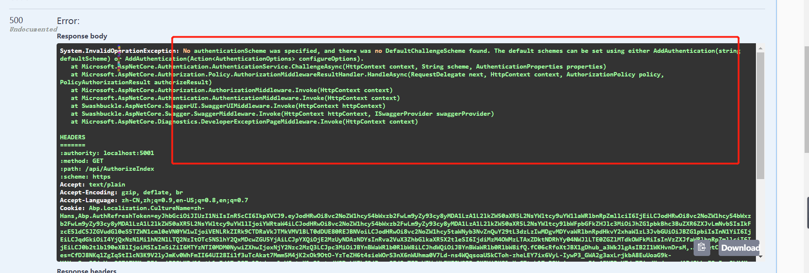
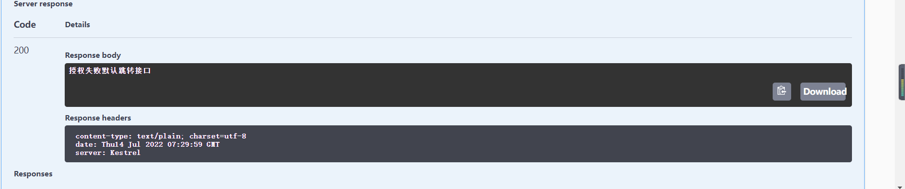
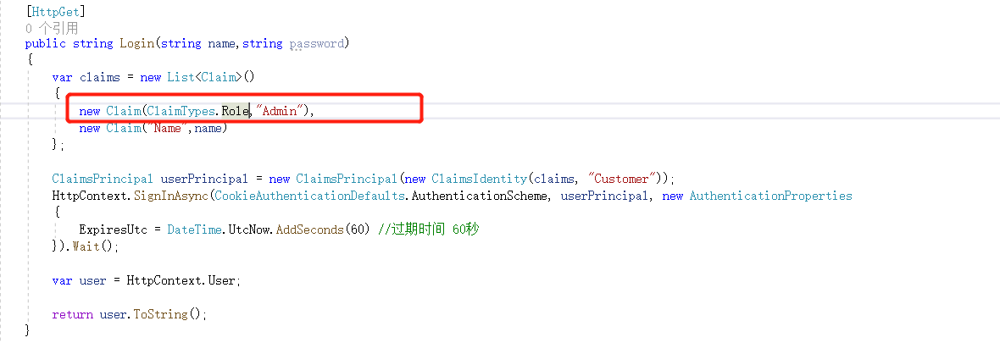

# 一：鉴权授权的常见应用背景 (业务和技术角度)
# 1. 授权是在用户注册登录某一系统后。有部分本来不可用的功能可以访问了。鉴权授权二者把保护资源这件事分成两步来完成
# 2. 为了保护服务器端资源
# 3. 因为 Http 协议：无状态 --- 多个请求之前 --- 相互独立，之前没有任关系。服务器不知道那些用户已经登录，或者没有登录 --- 鉴权授权就是让多个请求响应之前建立连写
# 二：最常见的授权 (Seesioon+Cookies)
# 1. 客户端带上用户名 + 密码请求服务端，服务端生成一个 Seesion 响应客户端的时候返回一个 SeesionId
# 2. 客户端将 SeesionId 保护在 Cookies 中。再次请求的时候就会带上 Cookies 中 SessionId
# 3. 服务器拿到客户端请求的 SeesionI 判段是否是之前分发出去的 SeesionId --- 鉴权
# 4. 有 SeesionId 就表示已经登录过，后面根据 SeesionId 查找出用户信息。根据用户信息作出判断，当前的用户是否可以去访问某些资源
# 三：为什么使用 Jwt 进行鉴权授权
# 1. 现在大型的互联网系统开发中通常会用到集群和分布式以达到系统的处理能力
# 2. 多个请求之前可能会被分发到不同的服务器进行处理。这导致可能除了发放 SeesionId 的那台服务器外。其他服务器并不能处理这个 SeesionId.
# 3. 对于上述 2 的问题。会有一些解决办法。例如共享内存。所有的服务器都从共享内存读取数据。但 Seesion 存储在服务器上也是有一定的开销，并且 Cookies 并不安全
# 四：AspNetCore 鉴权授权分为两步
# 1. 鉴权：搜集请求过来的代表用户身份的标识数据 --- 解析用户身份数据 --- 处理 --- 写入到上下文
# 2. 授权：根据用户身份信息来判断是否允许你请求
# 五：Authorize--- 标记就表示要授权
# 1.AuthenticationSchemes--- 需要明确通过那个方案 (哪个渠道来授权)--- 方案 / 渠道 Cookies,Jwt 等
# 2. 标记 Authorize 如果不指定 AuthenticationSchemes 默认的就是 Cookies
# 3.Role 角色授权
# 4.Policy 策略授权
# 六：使用 Cookies 进行鉴权授权
- 在鉴权授权之前我们需要生成用户的相关信息和授权渠道
| [HttpGet] |
| public void Login (string name,string password) |
| { |
| var claims = new List<Claim>() |
| { |
| // 里面的载体可以记录一些用户相关信息 |
| new Claim (ClaimTypes.Role,"Admin"), |
| new Claim ("Name",name) |
| }; |
| ClaimsPrincipal userPrincipal = new ClaimsPrincipal (new ClaimsIdentity (claims, "Customer")); |
| // 授权渠道为 Cookies |
| HttpContext.SignInAsync (CookieAuthenticationDefaults.AuthenticationScheme, userPrincipal, new AuthenticationProperties |
| { |
| ExpiresUtc = DateTime.UtcNow.AddSeconds (60) // 过期时间 60 秒 |
| }).Wait () |
| var user = HttpContext.User; |
| } |
| [Route ("/api/[action]")] |
| public class AuthorizeController:ControllerBase |
| { |
| [HttpGet] |
| [Authorize] // 如果只标记了 authorize, 只需要解析到用户信息。就可以进行访问 |
| public string AuthorizeIndex () |
| { |
| return "authoize"; |
| } |
| |
| [HttpGet] |
| public string Default () |
| { |
| return "授权失败默认跳转接口"; |
| } |
| } |
运行项目调用 api, 报错

解决办法在 Startup 文件中注册鉴权
| // 默认进行 cookie 鉴权 |
| services.AddAuthentication (CookieAuthenticationDefaults.AuthenticationScheme).AddCookie (option => |
| { |
| option.LoginPath = "/api/Default"; // 如果授权失败默认跳转的 api |
| }); |
- cookies 过期后再调用 api

跳转到授权失败的默认api
# 七：使用角色授权
- 登录用户的角色是在生成用户的载体中录入的
 - 在 Authorization 中标记上角色授权
| [HttpGet] |
| [Authorize (Roles =("Admin"))] |
| public string AuthorizeIndex() |
| { |
| return "authoize"; |
| } |
如果标记的角色与当前登录的用户角色不匹配。则授权失败，找不到请求的 api。返回错误码 404
# 八：使用策略授权
- 在
Startup 文件中注册策略授权
策略授权就是自定义一些应用系统的授权方案
| services.AddAuthorization(policy => |
| { |
| policy.AddPolicy("Default", options => |
| { |
| options.RequireRole("Admin"); |
| }); |
| }); |
| [HttpGet] |
| [Authorize (Policy =("Default"))] |
| public string AuthorizeIndex() |
| { |
| return "authoize"; |
| } |
自定义策略授权